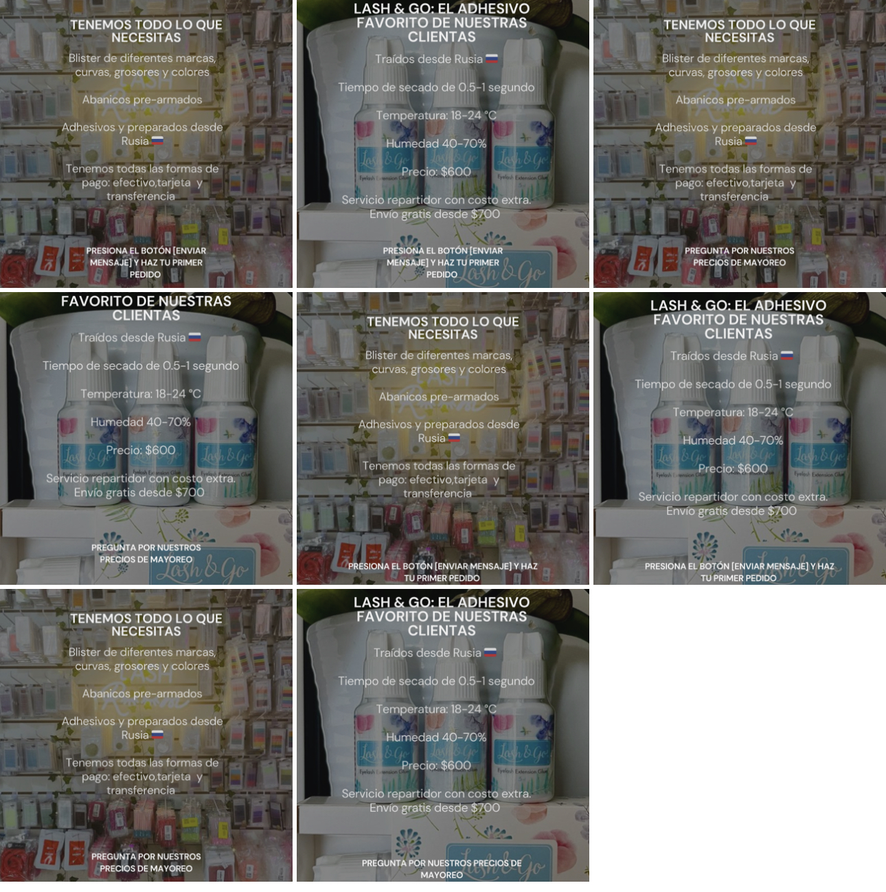

Experimentos y Pruebas A/B#
Elaborado en el ejercicio de Año Sabático autorizado en la UJED
En Mayo de 2024, mi esposa decidió que abriríamos una sucursal de la tienda en Mazatlán.
La ciudad nos queda a 3 horas y media y pensamos que sería una buena oportunidad para expander el negocio y aprender a operarlo. En una semana nos instalamos en un local, pusimos cámaras y un sistema de inventarios y echamos a andar la aventura.
Ahora sólo queda encontrar clientes que quieran ir a la tienda.
Una de las estrategias que intentamos fue hacer publicidad usando Instagram. El problema: ninguno de los dos tenemos experiencia en pautar (es la palabra fancy que usan para decir “poner publicidad”).
Así que hice un experimento.
Dividí el anuncio en tres elementos e hice tres versiones diferentes de cada uno. En total fueron \(2^3 = 8\) diferentes anuncios. Cada anuncio tenía una diferente combinación de llamado de atención, de oferta de valor y de llamado a la acción.

Lanzamos los anuncios, con un miedo inmenso de que tal vez estamos echando dinero a la hoguera (i.e. Meta).
Cuando se acabó la campaña, encontramos una diferencia enorme entre anuncios. El anuncio más efectivo costaba \(40 pesos (MXN) por *lead*, a diferencia del menos efectivo, que costaba más de \)200. El objetivo era encontrar el mensaje correcto.
Y lo logramos, por una fracción del presupuesto que habríamos puesto en contratar a un “experto” en mercadotecnia.
Los experimentos son el gold standard de la ciencia#
Si tu experimento necesita estadística, debiste haber hecho un mejor experimento.
Ernest Rutherford
Si quieres saber algo con certeza, haz un experimento.
Hoy en día, las plataformas para hacer publicidad en línea tienen incluida la creación de pruebas A/B. Una prueba A/B es un experimento en el que se ponen dos versiones diferentes de un anuncio y la plataforma optimiza para encontrar rápido y en automático cuál es la versión más efectiva. Hay otros servicios que hacen algo similar: stripe te permite hacer pruebas A/B en los formularios de pago para que hagas pruebas con detalles del diseño o el copy y puedas elegir siempre la más efectiva.
En realidad la oportunidad de hacer experimentos en los negocios es ilimitada.
La mayor limitante de los experimentos en los negocios es el tiempo. El punto de un experimento es aislar todas las variables que podrían afectar los resultados. Si queremos conocer el efecto que tiene una campaña publicitaria en las ventas, tenemos que poner en contexto la época del año en que se hizo, el medio en el que se ejecuta, la segmentación que se aplicó y hasta si estaba mercurio retrógrado (¡broma!).
¿Por qué se usan experimentos para hacer inferencia causal en los negocios?#
Imagina esta situación: hay una discusión en tu compañía sobre el encabezado en tu landing page.
Acabas de contratar a un economista en el área de marketing que viene con nuevas ideas y quiere cambiar el encabezado que han tenido en los últimos 5 años. El nuevo encabezado estaría más centrado en el cliente y no es una descripción de la empresa. De acuerdo a él, esto aumentaría la tasa de conversión de la página, pero su jefe no está de acuerdo y quiere dejar el copy actual.
La solución del 99% de las empresas: organizar reuniones para debatir y encontrar la repuesta.
El problema con este enfoque es que hacer una reunión puede llegar a ser muy costoso y existe el riesgo a que no se llegue a ningún acuerdo. Si llamas a una reunión a 10 empleados y cada uno de ellos está ganando \(50 dólares la hora, entonces se trata de una reunión de \)500 dólares. Lo peor es que lo más probable es que ninguno de los asistentes a la reunión pueda dar con los argumentos suficientes para decidir el uso de algún copy. En el mejor de los casos, se tomará una decisión que no está basada en datos. En el peor de los casos, la decisión será más un reflejo de las dinámicas de poder en la empresa que de la efectividad del copy.
¿De qué forma sí podrías encontrar la respuesta correcta, libre de controversias? usando un experimento.
Éstas son las razones para usar experimentos en los negocios:
Razón #1: los experimentos quitan cualquier fuente de duda razonable en la causalidad entre variables. Cuando se hace un experimento, puedes afirmar con seguridad que la relación que encuentras es causal. Si haces un análisis de la información que no viene de experimentos, siempre habrá quien niegue tus resultados diciendo “correlación no implica causalidad”.
Razón #2: el resultado de los experimentos se hacen con matemáticas simples y con poca estadística. Cuando haces un experimento bien, lo único que necesitas es una diferencia de medias y algunas pruebas estadísticas sencillas y fáciles de interpretar. El resultado es muy claro e intuitivo y no necesita matemáticas complejas.
Razón #3: los resultados son más entendibles e interpretables. A diferencia de lo que muchos creen sobre la ciencia, los científicos siempre buscamos la claridad. Con pocas matemáticas y estadística, es más fácil comunicar los resultados de manera creíble.
Razón #4: puede ser mas barato de implementar que hacer reuniones para tomar una decisión. Sobre todo cuando una empresa es pequeña, es más importante basar nuestras decisiones en evidencia. ¿De verdad es importante tener a todos los jefes de área para decidir el copy de tu página? Eso es algo que debes dejar que decidan tus clientes.
¿Qué pasa cuando no se puede hacer un experimento?#
La regla es que siempre debemos comenzar con un experimento, o mejor dicho con un experimento ideal.
La realidad es que en la mayoría de los casos, un experimento no es posible, no es ético, o está fuera de nuestro presupuesto. Nada de eso impide que imaginemos cuál sería el experimento ideal que nos ayudaría a identificar los efectos que buscamos. Angrist y Pischke (2005) sugieren que hagamos ese ejercicio imaginándonos como investigadores sin restricciones de presupuesto no comité de ética que tenga que revisar lo que hacemos.
Algo así como los científicos de la película del ciempiés humano.
La razón #1 para comenzar con un experimento idea es que si no puedes imaginar una forma de identificar causas y efectos cuando no tienes ninguna restricción, entonces será difícil que logres identificar los efectos en situaciones normales. Por otro lado, el ejercicio de imaginar el experimento te ayuda a entender la relación causal de una forma más precisa. Con esto puedes identificar las variables que se involucran y cómo funcionan.
Aunque no lo creas, hay preguntas que no se pueden resolver ni aún con un experimento.#
¿Cuál es el impacto de la experiencia laboral antes de fundar una empresa?
En un estudio con casi tres millones de emprendedores se encontró que la edad en la que los emprendedores tienen más probabilidad de tener éxito en los negocios es de 42 años. Aparentemente, la experiencia laboral es un factor clave que da las condiciones ideales para hacer que los negocios tengan un mejor desempeño. ¿Podíamos hacer un experimento para comprobarlo?
El problema es que las personas con más experiencia laboral, también tienen más años de vida.
Con más edad viene más experiencia, pero también podría tratarse de una mayor madurez emocional o una red de contactos más grande. Podríamos imaginar un experimento en el que separamos a dos grupos de emprendedores y nos aseguramos que el grupo A emprenda en sus 20 y el grupo B emprenda llegando a los 40 y medimos la diferencia. Pero hay miles de características inseparables de la edad que hacen que los dos grupos sean fundamentalmente distintos.
Y por lo tanto, nuestro experimento no puede tener resultados significativos.
Es importante saber distinguir cuándo una pregunta es fundamentalmente imposible de contestar, aún con un experimento hipotético sin límite de recursos. De esta manera no perdemos el tiempo tratando de hacer comparaciones sin sentido con datos de menor calidad que los que vienen de un experimento.
Ejemplo: El efecto de las búsquedas pagadas en las ventas#
El modelo de negocios de Google es uno de los más extraños e ingeniosos que te vas a topar.
Cada vez que haces una búsqueda en Google, se lanza una subasta tras bambalinas. Si alguna vez has intentado poner un anuncio en Google, te darás cuenta de que estás haciendo pujas por términos de búsqueda. Si tienes una tienda de productos para hacer escalada, te interesa aparecer en los primeros términos cuando alguien pone “calzado de escalada” en el buscador.
Tienes dos formas de lograrlo: haciendo contenido relevante y pagando a Google para que te ponga en los primeros lugares.
El contenido puede venir en forma de un blog. De hecho antes de las redes sociales esa era la única manera de hacer que el buscador te suba en los lugares de búsqueda de manera orgánica. Puedes escribir sobre cómo usar correctamente el calzado, sobre accesorios para escalar o sobre técnicas de escalada.
Si haces bien tu contenido, apareces en los primeros lugares aunque no estés pagando a Google.
Por eso el negocio de google es tan peculiar. Si eres la marca más relevante de una categoría, pagar porque te ponga en los primeros lugares no parece tener mucho sentido, pues ya debes de aparecer al inicio. Es difícil saber las búsquedas pagadas realmente están surtiendo efecto o son sólo un gasto innecesario.
Se necesita hacer un experimento para averiguarlo.
Blake, et al. (2015) hicieron una serie de experimentos con diferentes productos publicados en la plataforma eBay. El experimento consistía en “apagar” las búsquedas pagadas para diferentes productos elegidos al azar y comparar las ventas en los grupos de tratamiento y de control. Lo que encontraron fue que los clicks que venían de la publicidad pagada fueron sustituidos casi en su totalidad por clicks que venían de los resultados de búsqueda.
Las búsquedas pagadas no tenían ningún efecto.
Pero como siempre, los detalles son importantes. Los autores se acercaron a eBay con sus resultados para hacer un experimento a mayor escala con casi el 30% de los productos de la tienda. El estudio lo hicieron con diferentes mercados e identificando a diferentes tipos de usuarios. Encontraron que si hay un efecto positivo para los clientes que tienen poco tiempo como usuarios en la tienda y realmente necesitan ayuda para encontrar lo que necesitan. También las marcas más pequeñas dentro de la tienda mejoraron sus ventas gracias a la publicidad, a pesar de que las marcas grandes recibían clicks de búsquedas pagadas y orgánicas por igual.
Prompt: Diseña el experimento ideal#
Encontrar la estrategia apropiada para estudiar un tema que nos interesa es complicado.
Por eso te dejo este prompt que te permitirá pedirle a la inteligencia artificial que te de ideas sobre cómo hacer un experimento que te interesa. Copia y pega esto en la ventana del chat de la inteligencia artificial. Después de su primera respuesta dile tu idea de lo que quieres estudiar:
Te voy a enseñar a hacer un experimento ideal para inferencia causal.
Un experimento ideal es un diseño en el que se estudian los efectos causales sin limitaciones de presupuesto, de tiempo o de ética. Por ejemplo, para averiguar los efectos que tiene la educación en los ingresos de las personas podríamos ofrecer un incentivo económico a un grupo de tratamiento para que terminen sus estudios y revisar sus resultados en el tiempo.
Tampoco hay limitaciones en las leyes de la física. Si nos interesa conocer el efecto que tienen las instituciones en el desarrollo económico de una nación, podríamos volver en el tiempo y asignar diferentes estructuras gubernamentales a diferentes estados de México para hacer un análisis ceteris paribus de sus resultados económicos.
No te limites a los ejemplos que estoy dando. Puedes ser creativo.
Se trata de experimentos hipotéticos que nos permiten identificar la estrategia de identificación causal. Te daré un tema que me interesa estudiar y tu me darás una idea de experimentos ideales. ¿Estás listo?
Luego le puedes pasar la información de lo que quieres averiguar. Trata de darle tantos detalles como puedas para que tenga bien el contexto de lo que deseas. Aquí te dejo como ejemplo el texto de arriba sobre Google. El resultado de darle esto la mayoría de las veces es un experimento muy bien diseñado que se asemeja bastante a lo que hicieron Blake, et al. (2015).
El modelo de negocios de Google es uno de los más extraños e ingeniosos que te vas a topar.
Cada vez que haces una búsqueda en Google, se lanza una subasta tras bambalinas. Si alguna vez has intentado poner un anuncio en Google, te darás cuenta de que estás haciendo pujas por términos de búsqueda. Si tienes una tienda de productos para hacer escalada, te interesa aparecer en los primeros términos cuando alguien pone “calzado de escalada” en el buscador.
Tienes dos formas de lograrlo: haciendo contenido relevante y pagando a Google para que te ponga en los primeros lugares.
El contenido puede venir en forma de un blog. De hecho antes de las redes sociales esa era la única manera de hacer que el buscador te suba en los lugares de búsqueda de manera orgánica. Puedes escribir sobre cómo usar correctamente el calzado, sobre accesorios para escalar o sobre técnicas de escalada.
Si haces bien tu contenido, apareces en los primeros lugares aunque no estés pagando a Google.
Por eso el negocio de google es tan peculiar. Si eres la marca más relevante de una categoría, pagar porque te ponga en los primeros lugares no parece tener mucho sentido, pues ya debes de aparecer al inicio. Es difícil saber las búsquedas pagadas realmente están surtiendo efecto o son sólo un gasto innecesario.
Se necesita hacer un experimento para averiguarlo.
Al final, van a pasar una de dos cosas:
Vas a encontrar una forma de implementar el experimento.
O vas a diseñar tus modelos para que los resultados se asemejen lo más posible a los experimentos.
Espero que este libro te resulte útil.
Si eres economista y deseas escribir tu primer paper de economía, hice este curso gratis por correo justo para tí.
En este curso aprenderás a:
Crear objetivos de investigación que tienen sentido, que ningún juez te podrá “tumbar”.
Usar causalidad en tus modelos y no sólo seguir una receta de cocina para trabajar con datos.
Apoyarte de otras personas y la tecnología para escribir al menos dos papers al año, todos los años, consistentemente y para siempre.
Referencias#
Blake, T., Nosko, C., & Tadelis, S. (2015). CONSUMER HETEROGENEITY AND PAID SEARCH EFFECTIVENESS: A LARGE-SCALE FIELD EXPERIMENT. Econometrica, 83(1), 155–174. http://www.jstor.org/stable/43616924
Angrist, J. D., & Pischke, J. S. (2009). Mostly harmless econometrics: An empiricist’s companion. Princeton University Press.
Platzi Team (2021) Estado de impacto de Platzi recopilado de https://platzi.com/blog/estado-de-impacto-de-platzi-2021/